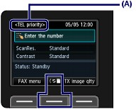
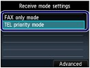
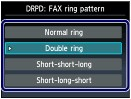

There are receive modes available as follows.
 TEL priority mode
TEL priority mode
FAX only mode
DRPD*1 or Network switch*2
*1 This setting is only available in US and Canada.
*2 This setting may not be available depending on the country or region of purchase.
See Selecting a Receive Mode to select the appropriate mode.
 Note Note
For the receiving method depending on each receive mode, see Receiving Faxes.
|
Select the receive mode.
(1) Press the FAX button.
The fax standby screen will appear.
Confirm the current receive mode (A).
(2) Press the center Function button.

The Receive mode settings screen will appear.
(3) Use the  or
or  button to select a receive mode.
button to select a receive mode.
| Note
|

(4) Press the OK button.
The screen will return to the fax standby screen.
| Note
|
 Setting the DRPD Ring Pattern (US and Canada only)
Setting the DRPD Ring Pattern (US and Canada only)If you have subscribed to a Distinctive Ring Pattern Detection (DRPD) service provided by your telephone company, your telephone company will assign two or more telephone numbers with distinctive ring patterns to your single telephone line, allowing you to have different numbers for fax calls and voice calls using only one telephone line. Your machine will automatically monitor the ring pattern, and will automatically receive the fax if the ring pattern is a fax call.
To use DRPD, follow the procedure below to set the fax ring pattern that matches the pattern assigned by your telephone company.
| Note
|
Display the DRPD: FAX ring pattern screen.
(1) Press the FAX button.
(2) Press the center Function button.
The Receive mode settings screen will appear.
(3) Use the or button to select DRPD.
(4) Press the right Function button to select Advanced.
(5) Select DRPD: FAX ring pattern, and press the OK button.
Select the ring pattern.
(1) Select the ring pattern that your telephone company assigned to your fax number.
Select from Normal ring, Double ring, Short-short-long, or Short-long-short.

(2) Press the OK button.
(3) Press the Back button.
The screen will return to the Receive mode settings screen.
(4) Press the OK button.
The screen will return to the fax standby screen.
Selecting a Receive ModeYou can select the receive mode suitable for your fax use conditions: whether or not you connect a telephone or answering machine to the machine, whether you use a dedicated line for fax, etc.
Select the receive mode according to the following procedure.
Each mode has the option settings. Specify those settings if necessary.
For details, refer to the on-screen manual: Advanced Guide.
When receiving voice calls (with a telephone or answering machine connected to the machine):When mainly receiving a voice call:
TEL priority mode
When a call incomes, the telephone will ring.*1
- If the call is a voice call, pick up the handset.
- If the call is a fax, pick up the handset. When the machine starts receiving the fax, hang up the handset.
| Note Available settings in Advanced*2
|
When subscribing to a ring pattern detection service provided by your telephone company:
DRPD or Network switch
When a call incomes, the telephone will ring.*1 The machine detects a fax call by the fax ring pattern.
- If the call is a fax, the machine will receive the fax automatically.
- If the machine does not detect the fax ring pattern, the telephone will continue ringing.
| Note Available settings in Advanced*2
|
When not receiving voice calls:When receiving a fax only:

FAX only mode
When a fax incomes, the machine will receive the fax automatically.
| Note Available settings in Advanced*2
|
*1 The telephone may not ring when a call incomes even if it is connected to the machine, depending on the type or settings of the telephone.
*2 The settings can be changed in Advanced on the Receive mode settings screen.
For details, refer to the on-screen manual: Advanced Guide.